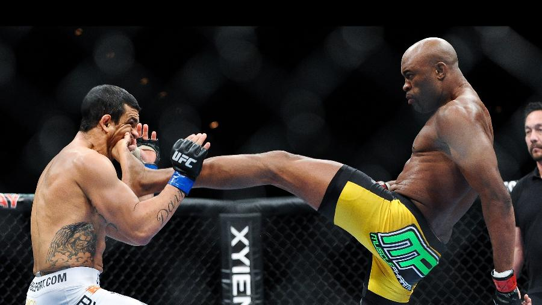

Muay Thai no UFC
A "arte das oito armas" dentro do maior octógono do mundo
O que é o Muay Thai?
Muay Thai é uma arte marcial originária da Tailândia, conhecida como a "arte das oito armas", pois utiliza eficientemente punhos, cotovelos, joelhos e canelas. Além dos golpes, o Muay Thai também inclui clinches e quedas curtas.
Importância no UFC
No MMA moderno, o Muay Thai é uma das bases mais eficazes para o striking (trocação em pé). Muitos lutadores usam técnicas de Muay Thai para controlar a distância, atacar com potência e finalizar lutas com nocautes espetaculares.
Lutadores famosos com base no Muay Thai:
- Anderson Silva 🇧🇷
- Edson Barboza 🇧🇷
- Joanna Jędrzejczyk 🇵🇱
- Jose Aldo 🇧🇷
Golpes comuns do Muay Thai usados no UFC
- Chute baixo (Low Kick)
- Cotovelada giratória
- Joelhada voadora
- Chute frontal (Teep)
- Chute alto (High Kick)
Nocautes marcantes com golpes de Muay Thai
- Anderson Silva vs Vitor Belfort (2011): Nocaute com um chute frontal no queixo.
- Edson Barboza vs Terry Etim (2012): Nocaute com um chute giratório espetacular na cabeça.
- Jose Aldo vs Cub Swanson (2009): Joelhada voadora em 8 segundos de luta.